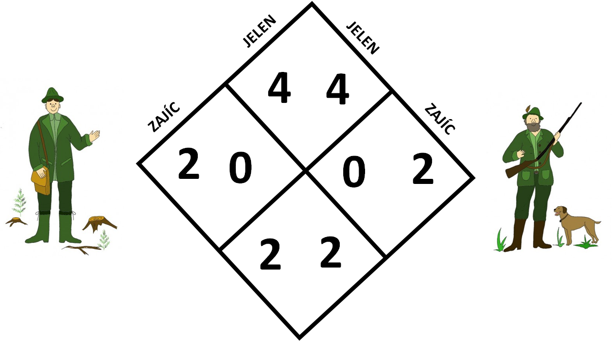
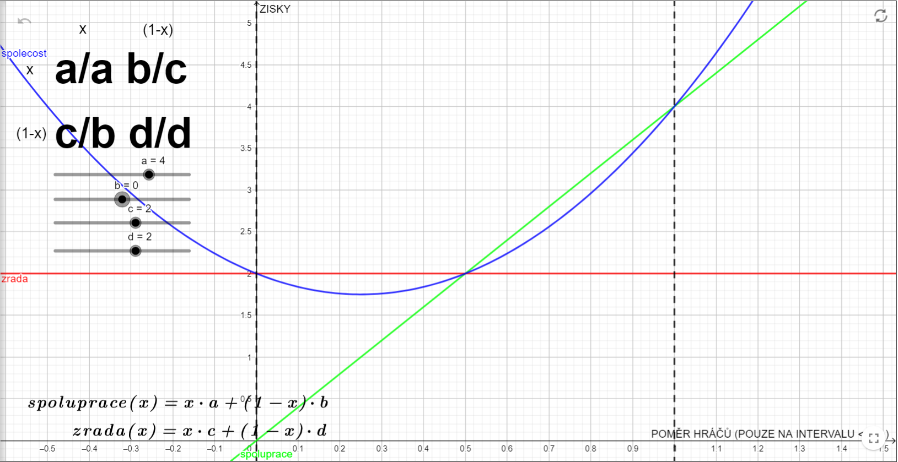

Pokud jste si zatím nepřečetli kapitolu o vězňově dilematu, doporučujeme to provést. Některé pojmy zde budeme používat znuvu aniž bychom je více vysvětlovali.
Opět začneme příběhem. Tentokrát je o dvou myslivcích, kteří se vydali na hon. Za cíl si stanovili ulovit místního jelena. Jelen je ale velmi zdatné zvíře, a tak ho myslivec sám neuloví a potřebuje druhého myslivce. Lze ho tedy ulovit pouze ve dvou. Myslivci se rozdělí na dvě skupiny po jednom myslivci a každý kráčí z jedné strany lesa. Cestou se každému myslivci naskytne příležitost ulovit zajíce kolem něj běžícího. Myslivci ví, že když uloví zajíce už se nebudou moci vydat na jelena. Také ví, že polovina jelena je mnohem hodnotnější než jeden zajíc. Logicky se tedy vyplatí pokračovat dále a ulovit společně jelena. Přesto se jeden z myslivců rozhodne ulovit zajíce.
Nyní si rovnou zapíšeme možné výsledky do matice pomocí čísel. Víme, že mohou nastat následující tři situace, seřazené od nejhodnotnější po nejméně hodnotnou.
1) Myslivec společně s druhým uloví jelena, tedy z lovu si odnáší polovinu jelena
2) Myslivec uloví zajíce
3) Myslivec neuloví nic
Situaci tedy odpovídá například následující matice:
Popřemýšlejte nejdříve nad rozdílností tohoto konceptu od vězňova dilematu sami. Platí teď jiné nerovnosti? Jak by ste se v podobné situaci zachovali?
Stejně jako u vězňova dilematu, i zde hraje podstatnou roli důvěra mezi hráči. Pokud se myslivci navzájem znají a mohou se na sebe spolehnout, nemají důvod lovit zajíce. Pokud se ale naznají, mohou uvažovat tak, že raději uloví alespoň něco a na druhého se vykašlou, a to i přesto, že zajíc naní tak cenný jako polovina jelena.
V tom už možná cítíte rozdíl. Ve vězňově dilematu se vyplatilo pro osobní zisk hráče zradit vždy, bez ohledu na strategii druhého hráče. U Honu na jelena je to už ale jinak. Pokud víte, že vás protihráč zradí, tak se vyplatí zradit také, pokud ale víte, že bude spolupracovat je lepší spolupracovat. Není zde tedy rozpor mezi osobním a kolektivním zájmem. Pokud se tedy hráči předem dohodnou, že budou spolupracovat nemají motivaci zradit - přišli by tak o zisk. Ve vězňově dilematu je ale pokušení zradit vždy, protože vždy přinese větší zisk. I člověk se sobeckým charakterem má v honu na jelena motivaci spolupracovat!
Stejně jako u vězňova dilematu i zde můžeme uvažovat charakter hráčů. Úvahy jsou poté naprosto analogické, proto je nebudeme popisovat znovu. Pokud potřebujete, podívejte se do předchozí kapitoly. Na ose x tedy máme tedy opět charakter protihráče, na ose y průměrný zisk v jedné hře. Zelená křivka znázorňuje zisk v případě spolupráce, červená v případě zrady. Modrá potom průměrný zisk, pokud by spolu hráli dva hráči daného chrakteru.
Pokud si chcete s grafem pohrát můžete na něj kliknout a měnit pravidla hry.
Příkladů může být opravdu mnoho. Ježdění dvěma auty po jedné osobě místo využití jednoho auta pro dvě osoby. Nebo po nedohodnutí bereme na společný výlet s přáteli každý svou lékárničku, přestože by stačila jen jedna atd. Fantazii se meze nekladou a stejně jako u vězňova dilematu můžete přiklady honu na jelena nacházet téměř všude. My ještě zmíníme dvě mírně neobvyklé situace.
V jedné daleké zemi jeden daleký diktátor rozhodl, že ač se doteď jezdilo na silnicích vlevo, začne se jezdit vpravo. Ze dne na den tedy vydal nařízení a jezdilo se vpravo, což přinášelo mnohé problémy, protože veškeré značení a infrastruktura byla stavěna na ježdění vlevo. Nikdo se to samozřejmě nenamáhat změnit. Po diktátorově smrti by člověk čekal, že se začne jezdit znovu vlevo, to se ale nestalo a tak všichni dále jezdili na nevhodné pravé straně. Nedohodli se.
Jistě znáte příběh o vánoční události během 1. světové války. Vojáci vyšli ze zákopů a místo střílení si povídali, společně se najedli, uspořádali dokonce fotbalový turnaj. Škoda, že jim to nevydrželo a později proti sobě stříleli znovu.
Existuje samozřejmě velká spousta dalších her. Spoustu z nich je ale nezajímavých, protože nestaví hráče před dilema rozhodování. Nejzajímavějšími a nejvíce obecným zástupci dilemat tak zůstává právě vězňovo dilema a hon na jelena. Podívejme se ale ještě stručně na několik zástupců jiných situací, které nemusí být nutně hrou dvou hráčů.
Podívat se na některé další koncepty Východiska z dilematů